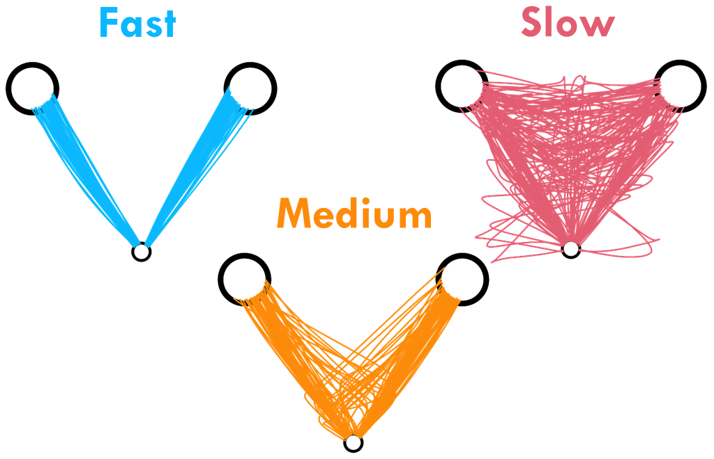
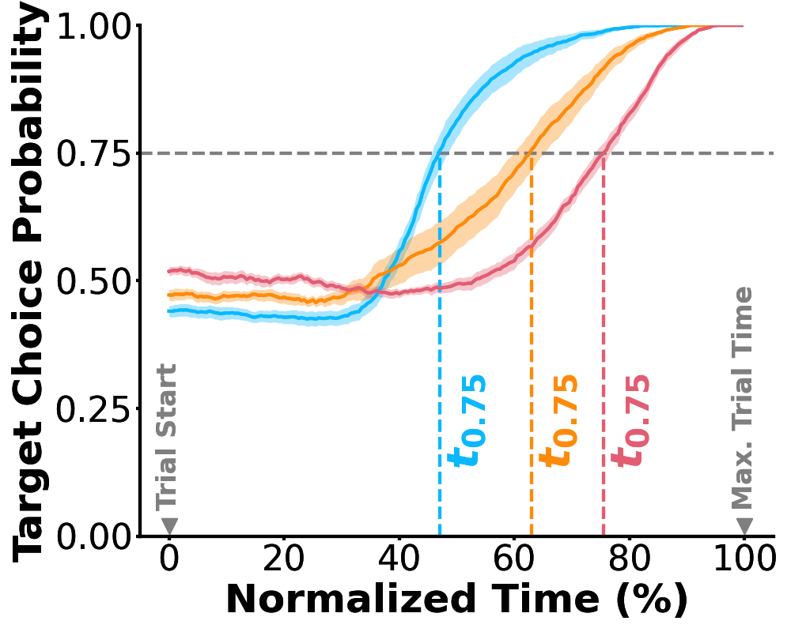
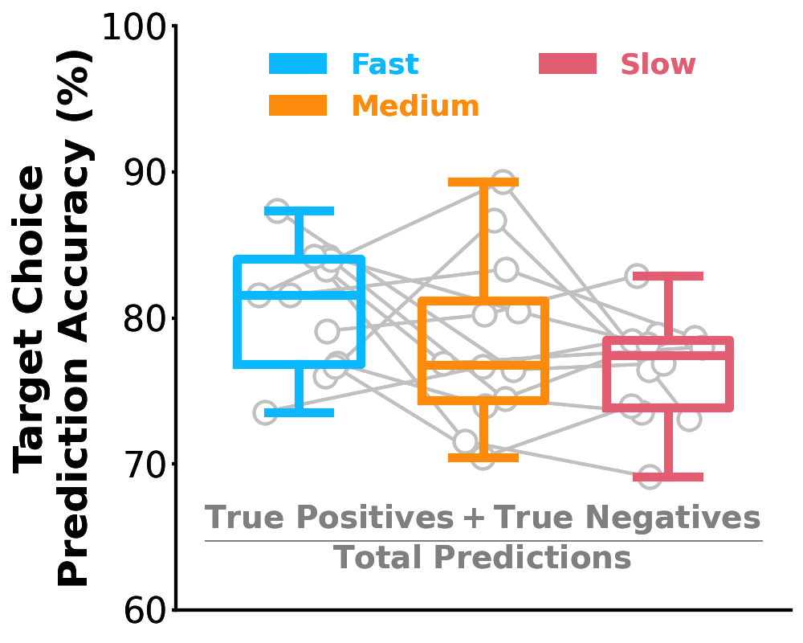
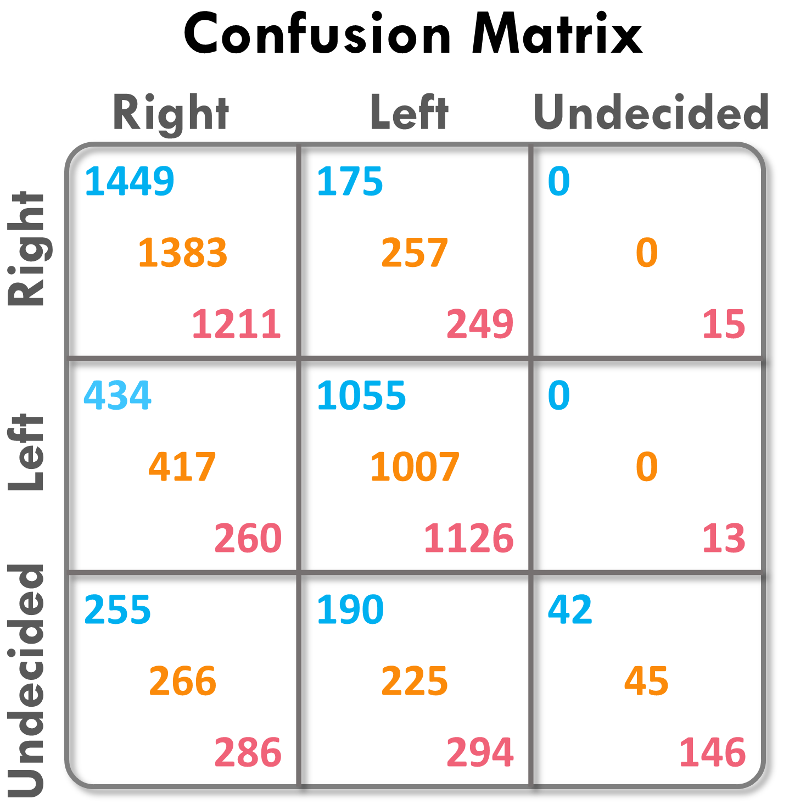
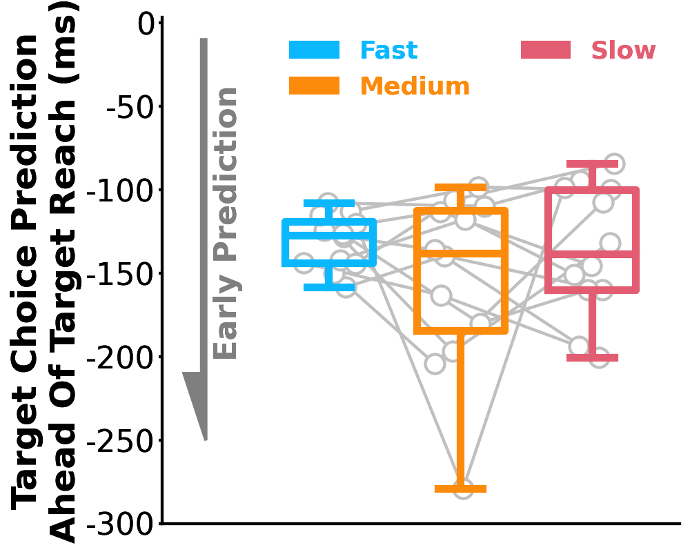

Decision-making model for human-human sensorimotor interactions
Motivation. Humans often anticipate the actions of other interacting humans to react accordingly in time. For example, a defensive player tries to predict the movements of an offensive player in order to intercept successfully. The goal of this study was to model the process that humans use to predict another human's actions in a repetitive motor interaction setting.
Experiment Description. We designed a competitive two-participant interactive sensorimotor game based on the matching pennies game (Game). Each participant controlled a cursor from a start position to one of two potential targets (left or right). Each participant had vision of the other's cursor while reaching to a target. The two participants were assigned as ‘predator’ and ‘prey’ at the start of the experiment. The 'predator' won a trial by reaching to the same target as that of the 'prey'. Conversely, the 'prey' won a trial by reaching to a different target from that of the 'predator'. (Sample trial animation shown in Panel 1, A). The trial duration available to select a target was manipulated under three conditions: fast (500ms), medium (850ms) and slow (1500ms). Each pair competed for 150 trials under each condition.


Modeling Description. We propose that each participant accumulates evidence to predict the other opponent's target choice. The accumulation of evidence is modeled as a drift diffusion process and the evidence is calculated using a bayesian learning model. The bayesian learning model consists of a set of beta distributions for the discretized x-coordinate space, y-coordinate space and time during the trial. The probability of selecting the right-side target at any given time during the trial is sampled from the beta distribution corresponding to the tuple of states (x, y, t). The beta distributions are updated using the observed trajectory data after each trial to obtain posterior distributions. Thus, the probability maps are learned between the trials while they are also used to predict decisions within each trial.



